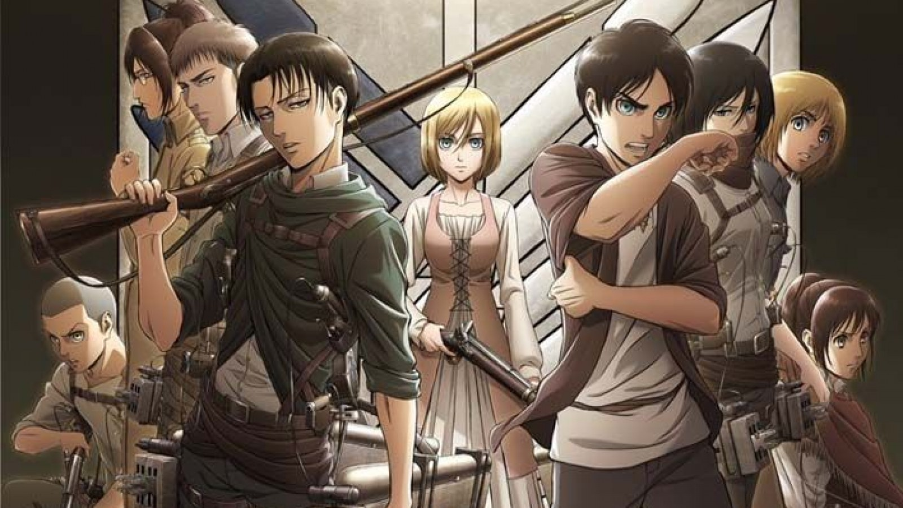
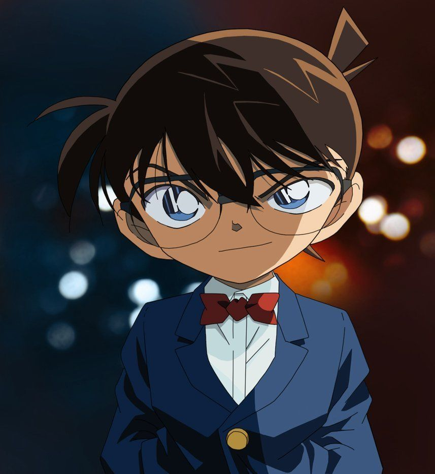
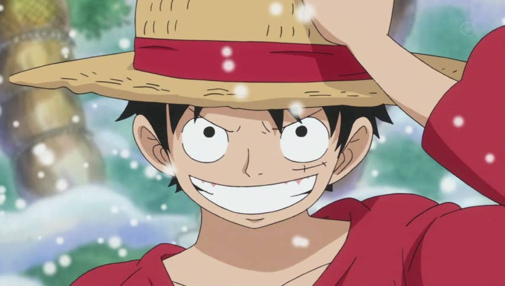
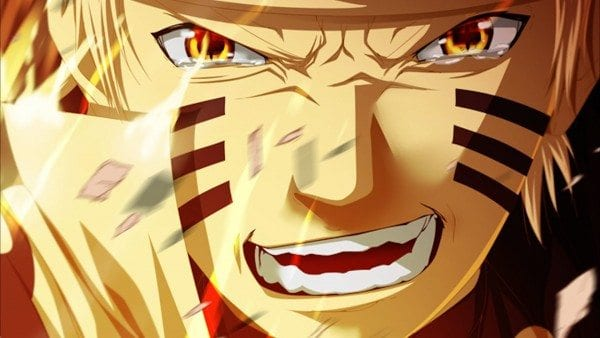
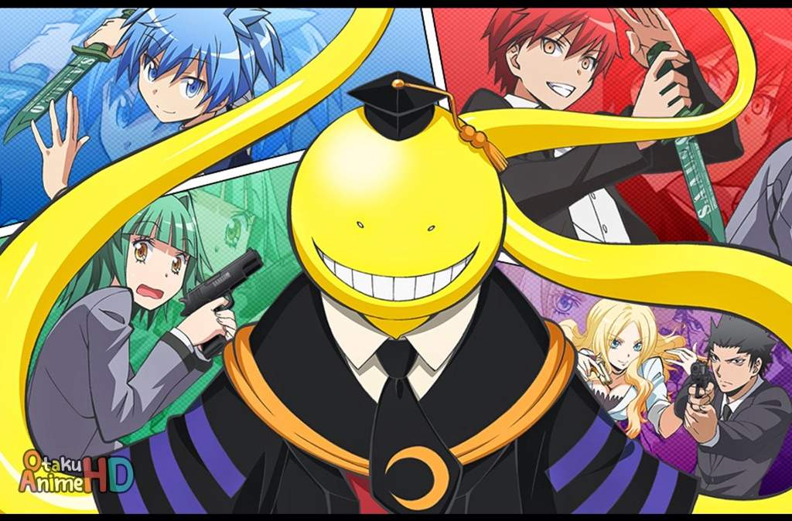
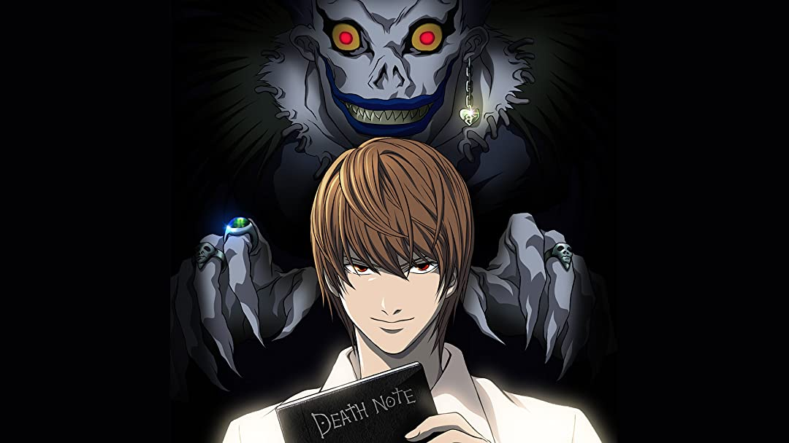
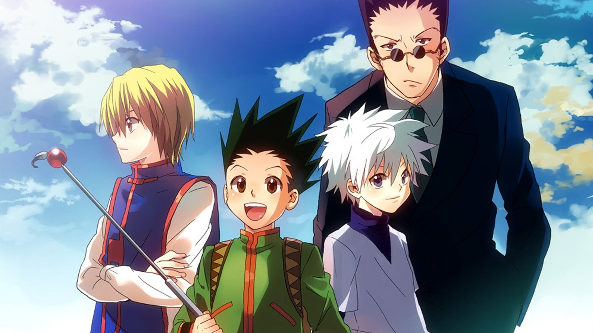
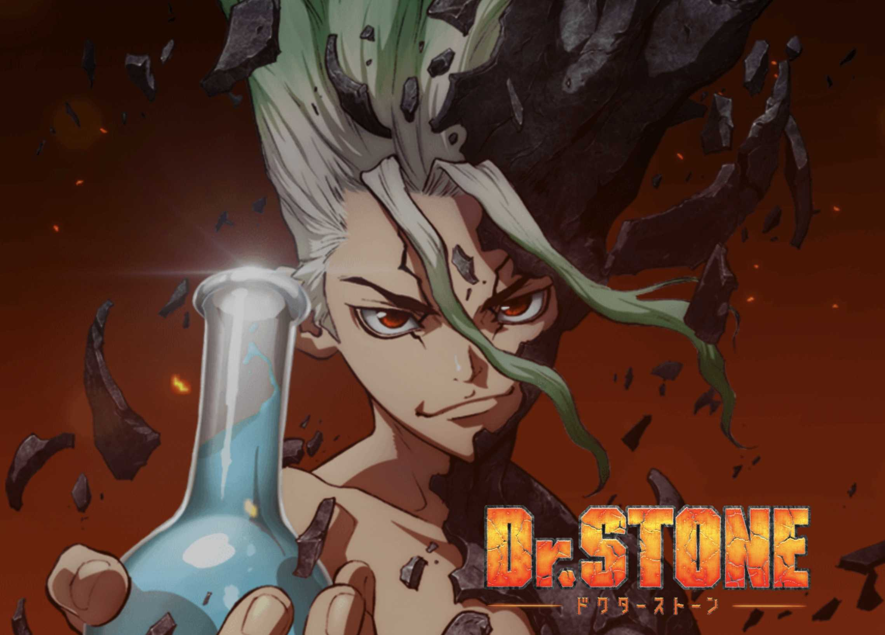
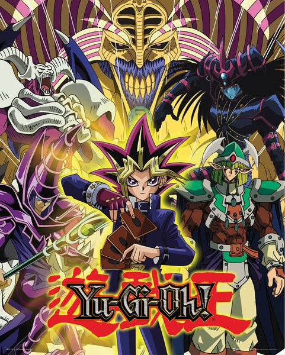

مسلسل أنمي من إنتاج تويه أنميشن، وهو تتمة أنمي دراغون بول. عُرض في اليابان لحوالي 7 سنوات، ما بين أبريل 1989 و يناير 1996 
Attac om Titan
وتقعُ أحداثها فِي عالمٍ خيالِي حيثُ يعيشُ البشرُ داخل أراضٍ محاطة بثلاثة أسوار ضخمة تحميهم من عمالقةٍ يأكلون البشر، تبدأُ الأحداثُ حِين يتم اختراق أحد الأسوار وهُو سُور ماريا حيثُ تقُومُ العمالقة بإبادةِ ثُلثِ البشرية. 
Detective Conan
تبدأ القصة بظهور الشخصية الرئيسية سينشي كودو ذو السبعة عشر عامًا، وهو متحرٍ يساعد الشرطة و في حل بعض القضايا وفي يوم من أيام العطلة خرج مع صديقة طفولته ران موري إلى مدينة الملاهي، وحدثت جريمة قتل داخل الأفعوانية وحلها كالعادة ، وبينما كانوا هناك لمح سينشي كودو رجلًا ذو ملابس سوداء يقوم بعملية ابتزاز. 
One Piece
بدأت السلسلة بإعدام غولد دي روجر، الرجل المعروف بلقب ملك القراصنة قبل موته، أعلن روجر أن كنزه، الون بيس سيكون متاحًا لأي شخص يعثر عليه، مسببًا بدء عصر القراصنة الكبير نتيجة لذلك، انطلق عدد لا يحصى من القراصنة نحو الحد الكبير للبحث عن الكنز. 
Naruoto
هاجم الثعلب الأسطوري ذو الذيول التسعة قرية كونوها وقتل العديد من سكانها وعاث فساداً في أرضها، تصدى له الشهاب (الهوكاغي (. ظل النار الرابع "ميناتو ناميكازي"، واستعمل تقنيةً ختم بها الكيوبي في جسد مولود جديد وهو ابنه ناروتو أوزوماكي لكن بالمقابل ضحى الهوكاغي بحياته. رأى أهل القرية الهوكاغي الرابع بطلاً لتضحيته بنفسه 
انمي فصل الاغتيال
كوكب الأرض مهدد من طرف مخلوق قوي دمر 70% من القمر بقوته قال المخلوق بأنه بعد سنة سيدمر الأرض، لكنه أعطى للبشرية فرصة لتجنب هذه الكارثة. في قسم 3-إي في إعدادية كونوغيجاوكا، بدأ العمل كأستاذ يدرس تلامذته وعدت الحكومة اليابانية بمكافئة 10 بلايين ين أيا من التلاميذ من نجح بقتل الأستاذ، الذي أسموه "كورو سينسي" 
Death Note
ياغامي لايت شاب حاد الذكاء يمقت ما انتشر في العالم من حوله من جرائم تثير الاستياء وكذلك الفساد الذي استشرى في الدنيا من حوله. ينعطف مسار حياته ليدخل في درب شديد العنف عندما يعثر على مذكرة غامضة اسمها (مذكرة الموت) ملقاة على الأرض. تشير التعليمات المكتوبة داخل المذكرة إلى أنه إذا كُتب اسم أحد الأشخاص، فإن هذا الشخص سوف يلقى مصرعه

Hunter X Hunter
تبدأ القصة باكتشاف غون أن والده لا يزال حياً من قبل صياد غريب قدم إلى قريته، فانطلق في رحلة للبحث عن أبيه والحصول على رخصة الصيد عبر دخوله لامتحان الصيادين، متجاوزاً الصعاب العديدة التي كانت تواجهه بمساعدة أصدقائه الذين التقى بهم خلال رحلته. 
Dr.Stone
ي سلسلة مانغا يابانية من تأليف ريتشيرو إيناغاكي ورسم بويتشي، نشرت من قبل شوئيشا في مجلة شونن جمب الأسبوعية منذ 6 مارس عام 2017. اقتبست المانغا إلى أنمي تلفزيوني من قبل استوديو طوكيو موفي شينشا، عرض الأنمي منذ 5 يوليو 2019 واستمر لغاية 13 ديسمبر من نفس العام بتعداد 24 حلقة 
Yu-Gi-Oh
سلسلة مانغا يابانية من تأليف كازكي تاكاهاشي، وأنتج منها فيما بعد سلسلة أنمي ولعبة أوراق تسمى مبارزة الوحوش والعديد من ألعاب الفيديو. وقد تمت دبلجة الأنمي للغة الإنجليزية واللغة العربية وعرض على قناة إم بي سي 3 وغيرها من القنوات العربية، ولقي شعبية واسعة في أوساط المهتمين بالأنمي في الوطن العربي.